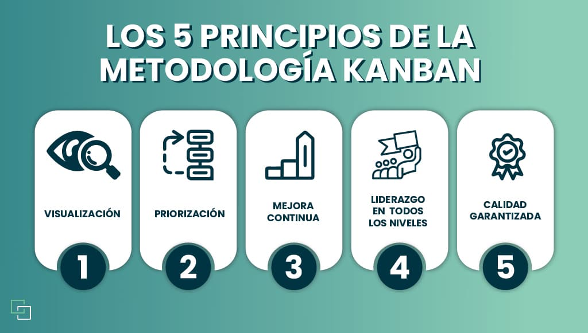

¿Que es la metodologia Kanban?
Al implementar esta metodología se garantiza una constante supervisión del
rendimiento tanto del equipo como del producto

Caracteristicas
Los incrementos son pequeños
Permite una fácil administración de las tareas en cada iteración
La inversión se materializa a corto plazo
Es un modelo propicio a cambios o modificaciones
Se adapta a las necesidades que surjan
Ventajas
Generación de valor
Equipo de trabajo organizado
Tiempos de entrega/Cumplimiento
Asignación de tareas
Calidad del producto
Acumulación de trabajo
Flexibilidad
Mejorar de manera colaborativa; experimentar y adaptarse
Desventajas
No es posible implantar el método Kanban cuando el proveedor tarda mucho en suministrar el producto
Se trata de un sistema que no permite anticiparse a grandes aumentos de la demanda
En grandes proyectos es posible que no se cumplan los plazos de entrega